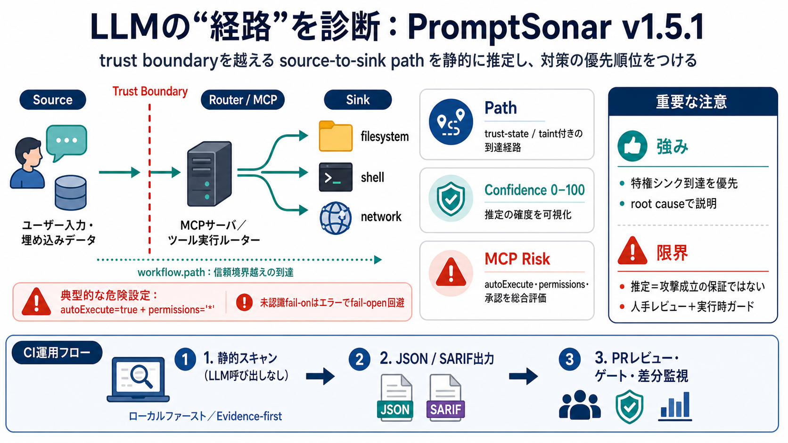

The OWASP Top 10 for LLM Applications (2025): Explained Simply
The challenge is that you can’t patch your way out of prompt injection. It exploits LLM design itself. Mitigation requir…

LLMの「経路」を診断
AIプロンプトやエージェント実行の「trust boundary（信頼境界）」を越える source-to-sink path を、静的に推定して安全性を優先順位付けします。
危険は「文」ではなく「到達」
プロンプトの危険さだけでは足りません。ユーザー入力が特権操作（ファイル、シェル、ネットワークなど）へ到達する「道筋」をどう確度高く推定できるかが核心です（source-to-sink path）。
npm audit for prompts
PromptSonarは「プロンプト本文の危険」ではなく「実行経路と権限の到達」を監査する考え方で、設定ミスの“攻撃面（execution surface）”を見つけます。
静的解析・LLMなし
PromptSonarはスキャン中にLLM呼び出しをせず、ローカルファーストで実行します。推定結果に root cause と Confidence を添えて提示します。
何を出すか（発見物）
PromptSonarは、信頼境界越えの“経路”を、Confidenceと合わせて提示し、MCPの攻撃面をスコア化し、運用できる形で出力します。
高確度の経路例
入力データの例では、autoExecute=true と permissions="*" が、最終的にMCP実行に繋がる疑いを強めます（例：Root Cause: MCP Tool Poisoning）。
見た目より根拠
Playgroundのグラフは finding.workflow.path に基づくとされ、LLMや疑似データによる推定を避けます。色だけで判断させません。
CIに載せる流れ
スキャン結果はJSON/SARIFとして出力され、GitHub ActionsやPRレビュー、ゲート条件で運用されます（.promptsonar.yml／fail_on／閾値など）。
OWASP / 証跡
v1.5.1では、Compliance evidence の出し方や OWASP LLM Top 10 へのマッピング、SARIFタグ付けなど、説明責任と監査向けの改善が列挙されています。
fail-onの改善
--fail-on が認識されない場合、以前は0で静かに終了する（fail-open）挙動だったものをやめ、未認識ならエラーに変更したとされています。CIゲートの信頼性を上げる変更です。
強みと限界
強みは「特権シンク到達」「承認ゲート」「ワイルドカード権限」「資格情報伝播」など、成立条件に近い論点へ焦点を当てることです。一方、静的解析ゆえ誤検知や過信には注意が必要です。
最終判断は運用次第
PromptSonarは「危険の可能性が高い実行経路を早期に発見し、経路を切る判断材料を提供する」価値が大きいです。静的推定の制約を前提に、mcp_risk_threshold・waiver（許可/免除）・レビュー体制を慎重に設計してください。
The challenge is that you can’t patch your way out of prompt injection. It exploits LLM design itself. Mitigation requir…
Many MCP servers still rely on static keys, PATs in environment variables, or weak access controls instead of delegated …
| Rate-limit and throttle requests | 10 | | Fine-tune models / use RAG | 9 | | Label and clarify AI-generated content | …
Mitigation strategies include: Sanitizing data and excluding sensitive content from training sets. Providing clear ter…
Get the OWASP GenAI LLM Top 10 2026 — published August 4, 2026. Browse the current source and contribute ## About This…